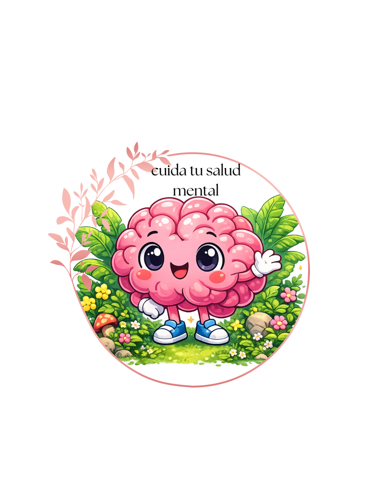

Cuida Tu Salud Mental
Ayuda a mejorar tus niveles emocionales
Y estar al tanto de como te sientes hoy

Consejos para cuidar tu salud mental
-
🧠 1.Entender y manejar tus emociones
Reconoces cuando estás triste, enojado o ansioso.
No reprimes lo que sientes, pero tampoco dejas que las emociones controlen todas tus decisiones.
💪 2. Afrontar el estrés de forma saludable
Puedes enfrentar problemas sin sentir que todo te sobrepasa.
Buscas soluciones o apoyo cuando lo necesitas.
- 🤝 3. Tener relaciones sanas
Puedes comunicar lo que sientes.
Pones límites cuando algo no te hace bien.
Confías en otras personas y también eres confiable.
como saber si esta bien tu salud mental
💚 Señales de que tu salud mental está bastante bien
- Puedes sentir emociones (tristeza, enojo, alegría) sin que te descontrolen.
Duermes y comes de manera más o menos normal.
Tienes ganas de hacer cosas que te gustan Puedes hablar de lo que sientes con alguien de confianza.
Aunque tengas problemas, sientes que puedes manejarlos poco a poco.